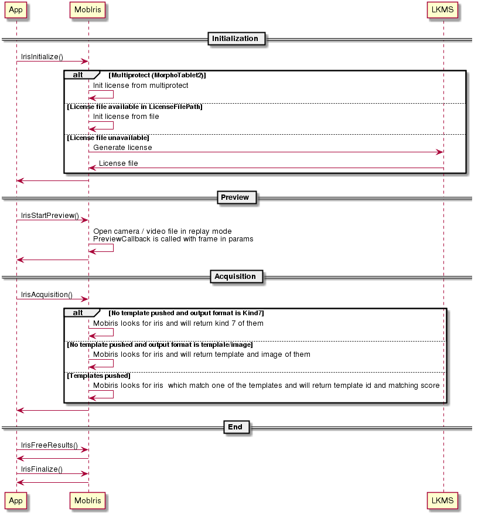
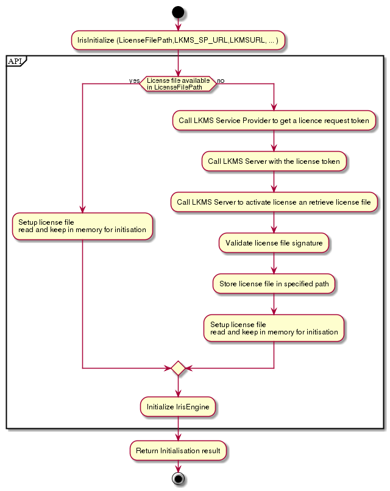

The purpose of this document is to describe the API of the MobIris SDK.
Below is the mobiris workflow:

And also the license generation workflow:

This is the first method called for a MobIris project. It does intialize MobIris engine, and generate/check LKMS license
/** @brief Initialization method : initialize aquisition engine @param const IRIS_ATTRIBUTE *i_attributesArray [in] : input params @param uint32_t i_attributesArrayLength [in] : count of input params @param PreviewCallback i_previewCallback [in] : pointer to preview callback function @param rt_logfunction i_logCallback [in] : pointer to log callback function @return error code */ uint32_t IrisInitialize(const IRIS_ATTRIBUTE *i_attributesArray, uint32_t i_attributesArrayLength, PreviewCallback i_previewCallback, rt_logfunction i_logCallback);
| Parameter | Description |
|---|---|
| i_attributesArray IRIS_ATTRIBUTE[] | MobIris initialization parameters |
| i_attributesArrayLength uint32_t | Size of paramters array |
| i_previewCallback PreviewCallback | Preview callback |
| i_logCallback rt_logfunction | Pointer to log callback function |
This is the lis of return code of MobIrisSDK:
| Return code | Description |
|---|---|
| IRIS_ERR_SUCCESS 0x00000000 | OK |
| IRIS_ERR_UNSPECIFIED 0x00000001 | Unspecified error |
| IRIS_ERR_LICENCE 0x00000002 | License violation |
| IRIS_ERR_INVALID_PARAM 0x00000003 | Invalid parameter |
| IRIS_ERR_UNINITIALIZED 0x00000004 | Iris module not initialized |
| IRIS_ERR_ALREADY_INITIALIZED 0x00000005 | Iris module already initialized |
| IRIS_ERR_CAMERA_UNAVAILABLE 0x00000006 | Camera unavailable |
| IRIS_EXTERNAL_SPECIFIC_ERROR_MASK 0x80000000 | Mask for external errors |
| IRIS_EXTERNAL_SPECIFIC_WARN_MASK 0x40000000 | Mask for external warnings |
| IRIS_WARN_CAMERA_OTP_READ 0x40000001 | Error reading camera OTP data. Using default values |
| IRIS_WARN_CAPTURE_ON_TIMEOUT 0x40000002 | Result are on timeout. Early exit not reached. |
| IRIS_ATTRIBUTE | Type | Size | Description |
|---|---|---|---|
| IRIS_ATTR_OUTPUT_FORMAT 0x00000001 | IRIS_FORMAT | type size | Expected output format bitmask:full picture/K7 |
| IRIS_ATTR_TIMEOUT 0x00000002 | uint32_t | type size | Maximum time for acquisition (in milli-seconds) |
| IRIS_ATTR_RECORD_OUTPUT_FILEPATH 0x00000003 | rt_char[] | count | Output camera stream on filesystem path for replay/debug |
| IRIS_ATTR_PREVIEW_ENCODING 0x00000004 | rt_char[] | count | Image preview encoding default Y8 |
| IRIS_ATTR_REFERENCE_TEMPLATE_LEFT 0x00000005 | unsigned char [] | count | Template for matching prefer template list |
| IRIS_ATTR_REFERENCE_TEMPLATE_RIGHT 0x00000006 | unsigned char [] | count | Template for matching prefer template list |
| IRIS_ATTR_REFERENCE_TEMPLATE_FORMAT 0x00000007 | IRIS_FORMAT | type size | Template format for matching _default IRIS_FLAGTEMPLATE |
| IRIS_ATTR_PREVIEW_CONTEXT 0x00000008 | void* | type size | User context passed on preview callback |
| IRIS_ATTR_OUTPUT_SIZE 0x00000009 | float | type size | Expected ouput size for JPEG200 kind7 default 3,5Ko |
| IRIS_ATTR_LOG_FILE 0x0000000A | rt_char[] | count | Log file unused |
| IRIS_ATTR_LOG_CONTEXT 0x0000000B | void* | type size | Log context passed to log function |
| IRIS_ATTR_LICENSE_FILE_PATH 0x0000000C | rt_char[] | count | LKMS license file path |
| IRIS_ATTR_LKMS_URL 0x0000000D | rt_char[] | count | LKMS url |
| IRIS_ATTR_LKMS_SP_URL 0x0000000E | rt_char[] | count | LKMS service provider url |
| IRIS_ATTR_TEMPLATESLIST 0x00000010 | rt_buffer * | type size | Matching templates |
| IRIS_ATTR_TEMPLATESLIST_LEN 0x00000020 | uint32_t | type size | Matching templates size |
| IRIS_ATTR_MATCH_MODE 0x00000030 | IRIS_MATCH_MODE | type size | Matching mode (unique/continuous) |
| IRIS_ATTR_REVERT_IMG 0x00000040 | uint32_t | type size | Revert image on capture |
| IRIS_ATTR_EXPECTED_IRIS_RADIUS 0x00000050 | uint32_t | type size | Expected iris size (default 127) |
| IRIS_ATTR_EARLY_EXIT 0x00000060 | uint32_t | type size | Enable early exit on acquisition (default false) |
| IRIS_ATTR_CAMPAIGN_OUTPUT 0x00000070 | rt_char[] | count | RTV record path with filename. Will output ids of analyzed frames. Will disable early exit to record video until timeout, but keep kind7 from early exit |
| IRIS_ATTR_MATCH_SCORE 0x00000080 | uint32_t | count | Required matching score, used in local matching mode |
| IRIS_ATTR_RECORD_INPUT_FILEPATH 0xF0000005 | rt_char[] | count | Output camera on filesystem path for replay/debug |
| IRIS_FORMAT | Format |
|---|---|
| IRIS_FLAG_IMAGE 0x00000001 | Iris image format Y8 |
| IRIS_FLAG_KIND7_J2K 0x00000002 | Kind7 format compressed JPEG 2000 |
| IRIS_FLAG_TEMPLATE 0x00000004 | Template internal format |
/** @brief Callback for camera preview @param rt_image *i_img [in] : image from camera @param IrisLocation i_IrisLeft [in] : location of left iris if localized @param IrisLocation i_IrisRight [in] : location of right iris if localized @param uint32_t i_Status [in] : status of preview @ref "status section bit field" @param void *io_Context [in/out] : user context @return error code */ typedef uint32_t (*PreviewCallback) (rt_image *i_img, IrisLocation i_IrisLeft, IrisLocation i_IrisRight, uint32_t i_Status, void *io_Context);
| Parameter | Description |
|---|---|
| i_img rt_image | Image to preview |
| i_IrisLeft IrisLocation | Location of left iris if found |
| i_IrisRight IrisLocation | Location of right iris if found |
| i_Status uint32_t | Bits field of preview status (bits signification is described in IRIS_STATUS definition) |
| io_Context void* | Preview context from IRIS_ATTR_PREVIEW_CONTEXT |
| IRIS_STATUS | Description |
|---|---|
| IRIS_STATUS_PREVIEW 0x00000001 | Preview only |
| IRIS_STATUS_TIMEOUT 0x00000002 | Timeout occured |
| IRIS_STATUS_IRIS_PENDING 0x00000004 | Looking for iris |
| IRIS_STATUS_IRIS_FOUND 0x00000008 | Iris found |
| IRIS_STATUS_IRIS_LEFT_FOUND 0x00000010 | Iris left found |
| IRIS_STATUS_IRIS_RIGHT_FOUND 0x00000020 | Iris right found |
| IRIS_STATUS_IRIS_LEFT_ACQUIRED 0x00000040 | Iris left acquired |
| IRIS_STATUS_IRIS_RIGHT_ACQUIRED 0x00000080 | Iris right acquired |
/** @brief IrisGetDeviceId method : return internal device id (IrisInitialize has to be called before) @param char o_id [out] return array storing device id in hexa format without string ending 0 @return error code */ uint32_t IrisGetDeviceId(char o_id[64]);
| Parameter | Description |
|---|---|
| o_id[64] char | Device UID |
/** @brief IrisGetCameraId method : return internal camera id (IrisInitialize has to be called before) @param const unsigned char** o_id [out] : return array storing camera id @param uint32_t *o_idSize [out] : return size of camera id @return error code */ uint32_t IrisGetCameraId(const unsigned char** o_id, uint32_t *o_idSize);
| Parameter | Description |
|---|---|
| o_id const unsigned char** | Camera ID |
| o_idSize uint32_t | Size of camera ID |
/** @brief IrisGetVersion method : return version of MobIris @return version string */ const char *IrisGetVersion();
/** @brief IrisStartPreview method : start preview, attach to camera module @param const IRIS_ATTRIBUTE *i_attributesArray [in] : input params @param uint32_t i_attributesArrayLength [in] : count of input params @return error code */ uint32_t IrisStartPreview(const IRIS_ATTRIBUTE *i_attributesArray, uint32_t i_attributesArrayLength);
| Parameter | Description |
|---|---|
| i_attributesArray IRIS_ATTRIBUTE[] | MobIris initialization parameters |
| i_attributesArrayLength uint32_t | Size of paramters array |
/** @brief IrisAcquisition method : look for iris on video stream @param const IRIS_ATTRIBUTE *i_attributesArray [in] : input params @param uint32_t i_attributesArrayLength [in] : count of input params @param IRIS_RESULT **o_attributesArray [out] : output results @param uint32_t *o_attributesArrayLength [out] : count of output results @return error code */ uint32_t IrisAcquisition(const IRIS_ATTRIBUTE *i_attributesArray, uint32_t i_attributesArrayLength, IRIS_RESULT **o_attributesArray, uint32_t *o_attributesArrayLength);
| Parameter | Description |
|---|---|
| i_attributesArray IRIS_ATTRIBUTE[] | MobIris initialization parameters |
| i_attributesArrayLength uint32_t | Size of paramters array |
| o_attributesArray IRIS_RESULT[] | MobIris acquisition output parameters |
| o_attributesArrayLength uint32_t | Size of output paramters array |
| IRIS_RESULT | Type | Size | Description |
|---|---|---|---|
| IRIS_RESULT_LEFT 0x00000001 | rt_buffer * | type size | Left kind7 |
| IRIS_RESULT_RIGHT 0x00000002 | rt_buffer * | type size | Right Kind7 |
| IRIS_RESULT_WIDTH 0x00000003 | uint32_t * | type size | Width of kind7 not used |
| IRIS_RESULT_HEIGHT 0x00000004 | uint32_t * | type size | Height of kind7 not used |
| IRIS_RESULT_ENCODING 0x00000005 | IRIS_FORMAT | type size | Result encodinf _notused |
| IRIS_RESULT_MATCHING_SCORE 0x00000006 | uint32_t * | type size | Iris matching score on matching mode |
| IRIS_DEVICE_ID 0x00000007 | rt_char[] | count | Camera device ID |
| IRIS_TEMPLATE_LEFT 0x00000008 | rt_buffer * | type size | Left iris template |
| IRIS_TEMPLATE_RIGHT 0x00000009 | rt_buffer * | type size | Right iris template |
| IRIS_PICTURE_LEFT 0x0000000A | rt_buffer * | type size | Left iris picture |
| IRIS_PICTURE_RIGHT 0x0000000B | rt_buffer * | type size | Right iris picture |
| IRIS_RESULT_MATCHING_INDEX 0x0000000C | uint32_t * | type size | Matching index of pushed template in matching mode [0 - 100] |
| IRIS_RESULT_ACQUISITION_QUALITY 0x0000000D | uint32_t * | type size | Quality of global acquisition |
| IRIS_RESULT_TEMPLATE_LEFT_QUALITY 0x00000018 | uint32_t * | type size | Left iris quality score [0 - 100] |
| IRIS_RESULT_TEMPLATE_RIGHT_QUALITY 0x00000019 | uint32_t * | type size | Right iris quality score [0 - 100] |
/** @brief IrisFinalize method : release aquisition engine and camera @return error code */ uint32_t IrisFinalize();
/** @brief IrisFreeResults method : free previous results @param IRIS_RESULT *i_attributesArray [in] : input results to free @param uint32_t i_attributesArrayLength [in] : count of input results @return error code */ uint32_t IrisFreeResults(IRIS_RESULT *i_attributesArray, uint32_t i_attributesArrayLength);
| Parameter | Description |
|---|---|
| i_attributesArray IRIS_RESULT[] | MobIris results |
| i_attributesArrayLength uint32_t | Size of paramters array |
#include "IrisInterface.h"
#include <stdio.h>
#include <stdlib.h>
#include <sys/types.h>
#include <android/log.h>
#include <pthread.h>
#define _countof(_Array) (sizeof(_Array) / sizeof(_Array[0]))
void RT_CALLBACKCALL logCallback(rt_loglevel i__level, const rt_string* i__message, void* io__userContext){
android_LogPriority priority;
switch(i__level) {
case RT_LOGLEVEL_DEBUG:
priority=ANDROID_LOG_DEBUG;
break;
case RT_LOGLEVEL_INFO:
priority=ANDROID_LOG_INFO;
break;
case RT_LOGLEVEL_WARNING:
priority=ANDROID_LOG_WARN;
break;
case RT_LOGLEVEL_ERROR:
priority=ANDROID_LOG_ERROR;
break;
}
__android_log_print(priority, "IrisInterface", "%s", i__message->string);
return;
}
uint32_t previewCallback(rt_image *i_img,IrisLocation i_IrisLeft,IrisLocation i_IrisRight,uint32_t i_Status, void *io_context){//[IN] callback used for GUI video display and abort
return IRIS_ERR_SUCCESS;
}
int main_iris(int argc, char **argv){
/*****************
Inputs
*/
char outputFilePath[]="/sdcard/IrisSample/";
char replayFilePath[]="/sdcard/IrisSample/RC_20150131_062113.rtv";//RC_20170223_103712.smv";//RC_20170223_103853.smv";//RC_20161017_154903.smv";
char providerURL[]="http://localhost:29080/lkms/LicenceRequest?profileId=demoSecureIdentity";
char lkmsURL[]="http://localhost:29081/lkms-server-app/v1/licenses";
char licenseFilePath[]="/sdcard/IrisSample/LKMSLicense.dat";
char *campaignPrefix=NULL;
char filename[256];
uint32_t timeout=25000;
uint32_t irisRadius=127;
uint32_t earlyExit=1;
uint32_t i;
IRIS_FORMAT outputFormat=IRIS_FLAG_KIND7_J2K;
void *previewContext=NULL;
void *logContext=NULL;
IRIS_ATTRIBUTE i_attributesArray[]={
//replay mode
{ IRIS_ATTR_RECORD_INPUT_FILEPATH, replayFilePath, sizeof(replayFilePath) },
{ IRIS_ATTR_CAMPAIGN_OUTPUT, campaignPrefix, campaignPrefix!=NULL?strlen(campaignPrefix)+1:0 },
//acquisition params
//{ IRIS_ATTR_RECORD_OUTPUT_FILEPATH, outputFilePath, sizeof(outputFilePath) },
{ IRIS_ATTR_TIMEOUT, &timeout, sizeof(uint32_t) },
{ IRIS_ATTR_OUTPUT_FORMAT, &outputFormat, sizeof(IRIS_FORMAT) },
{ IRIS_ATTR_PREVIEW_CONTEXT, previewContext, sizeof(void *) },
{ IRIS_ATTR_LOG_CONTEXT, logContext, sizeof(void *) },
{ IRIS_ATTR_EXPECTED_IRIS_RADIUS, &irisRadius, sizeof(uint32_t) },
{ IRIS_ATTR_EARLY_EXIT, &earlyExit, sizeof(uint32_t) },
{ IRIS_ATTR_LICENSE_FILE_PATH, licenseFilePath, sizeof(licenseFilePath) },
{ IRIS_ATTR_LKMS_SP_URL, providerURL, sizeof(providerURL) },
{ IRIS_ATTR_LKMS_URL, lkmsURL, sizeof(lkmsURL) }
};
uint32_t i_attributesArrayLength=_countof(i_attributesArray);
/******************
Outputs
*/
IRIS_RESULT *o_attributesArray=NULL;
uint32_t o_attributesArrayLength;
uint32_t o_result;
FILE *f;
rt_buffer *o_buffer;
/******************
Workflow
*/
o_result = IrisInitialize(i_attributesArray,i_attributesArrayLength,previewCallback,logCallback);
if(o_result){
fprintf(stderr,"IrisInitialize error:%d",o_result);
exit(0);
}
//start preview before acquisition
o_result = IrisStartPreview(i_attributesArray,i_attributesArrayLength);
if(o_result){
fprintf(stderr,"IrisStartPreview error:%d",o_result);
exit(0);
}
//start acquisition
o_result = IrisAcquisition(i_attributesArray,i_attributesArrayLength, &o_attributesArray,&o_attributesArrayLength);
if(o_result){
fprintf(stderr,"IrisAcquisition error:%d",o_result);
exit(0);
}
/******************
Look at result
*/
for(i=0;i<o_attributesArrayLength;i++){
memset(filename,0,sizeof(filename));
if(o_attributesArray[i].type==IRIS_RESULT_LEFT){
sprintf(filename,"%s/kind7_%s.j2k",outputFilePath,"Left");
}
else if(o_attributesArray[i].type==IRIS_RESULT_RIGHT){
sprintf(filename,"%s/kind7_%s.j2k",outputFilePath,"Right");
}
if(filename[0]){
f = fopen(filename,"wb");
if(f)
{
o_buffer=(rt_buffer*)(o_attributesArray[i].pValue);
fwrite(o_buffer->data,o_buffer->size,1,f);
fclose(f);
}
}
if(o_attributesArray[i].type==IRIS_DEVICE_ID) {
rt_string id={o_attributesArray[i].pValue,o_attributesArray[i].ulValueLen};
logCallback(RT_LOGLEVEL_INFO,&id,NULL );
}
}
/******************
Finalize
*/
//Free results
IrisFreeResults(o_attributesArray,o_attributesArrayLength);
//Finalize, release camera
o_result = IrisFinalize();
if(o_result){
fprintf(stderr,"IrisFinalize error:%d",o_result);
//exit(0);
}
};
It is recommended to limit time exposition to IR led. For this, integrator has to limit number of successive acquisition of same user in its workflow.
Distance information are computed with iris radius.
If radius is smaller than expected radius it means that user should be closer. If it is greater, it means that user should be farther.
| Radius | |
|---|---|
| Nomi3 Liteon | 127px |
| Nomi3 Cam2 | 90px |
| SIM E601 | 90px |
| MT2 26cm | 80px |
| MT2 23cm | 90px |
If early exit is enable, it works on acquisition. It does count how much time iris is found with correct radius, and in correct area of screen.
When about 5 second is spends with correct values, an early exit is done, cancelling acquisition and returning best availables data (kind7 / image+template) If only one eye is found, the time is two times longer.
It is usefull to add an overlay on the preview to help user putting his eyes in correct area.
| Left margin | Valid area | Center margin | Valid area | Right margin |
|---|---|---|---|---|
| 30px | 730px | 400px | 730px | 30px |
| Upper margin | 200px |
| Valid area | 680px |
| Downer margin | 200px |